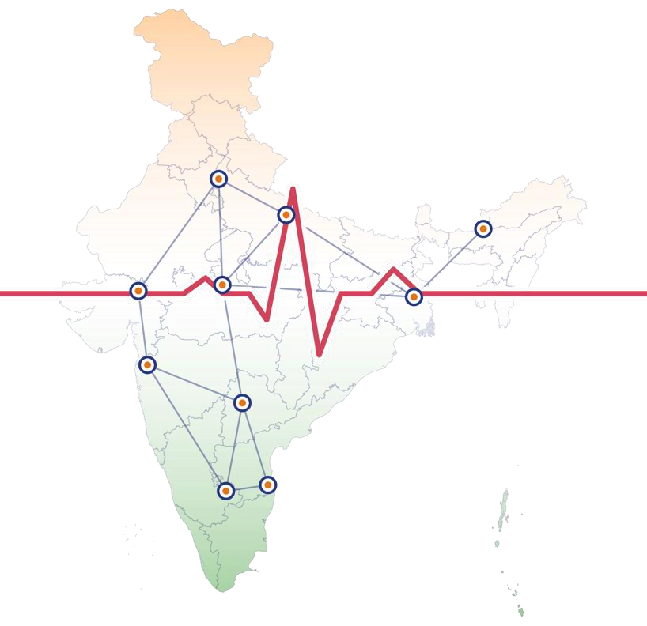

A five-year plan for AI in patient care that is proven, explainable and accountable
By 2031, India will set the benchmark for trustworthy AI in healthcare: devices validated on India's diverse population, open to public scrutiny through a national registry, and approved under rules that peer regulators choose to rely on.
Bring proven AI screening for imaging, ECG, retinal and pathology to districts where specialists are scarce.
Catch bias, drift and unsafe updates early, and make every device secure against cyber attack and data misuse by design.
Safer care for patients, AI tools that clinicians can understand and question, and a clear, predictable approval path for innovators.
Publish the safety evidence, so patients trust the device at the bedside and peer regulators accept India's approvals.
Proven performance across sex, age, region, language and device type.
Clinicians and patients know when AI is used and how autonomous it is.
A named legal owner for every algorithm, with clear liability and redress.
Patients, frontline clinicians and civil society shape the rules.
Sandboxes and risk-based change protocols bring safe products to patients sooner.
Patient safety first, secure by design against cyber attack and misuse.
Interoperable with IMDRF, WHO, ISO/IEC standards and peer regulators.
Binding rules for algorithm change protocols, Indian-population validation, DPDP-compliant data use and liability guidance.
CDSCO leads licensing, ICMR sets ethics, Data Protection Board and CERT-In cover data and cyber, AI Safety Institute supports testing.
Bias audits, algorithm change protocols, software bills of materials, sandboxes and a public AI-device registry.
Speed vs evidence, data access vs privacy, optional vs mandatory change control. Settled by risk class: stricter for Class C and D.
The scale is already national. The next task is to make safety, updates and accountability equally scalable.
Bias, explainability, reliability, cyber
Exclusion, misinformation, trust, jobs
Data protection, accountability, split mandates
Energy, carbon, e-waste
| Risk area | Why it matters (impact) | Short-term action (Years 1-2) | Long-term action (Years 3-5) | Responsible stakeholders (owner today) | Timeline | Do current laws cover it? What is needed? | International cooperation |
|---|---|---|---|---|---|---|---|
| Bias and poor generalisability | Foreign-trained models may fail on Indian sub-populations; skin-tone gaps already seen in dermatology AI. | Make Indian-population validation binding for Class C and D; publish subgroup results. | Independent fairness testing on BODH benchmarks; subgroup results in the Suraksha registry. | CDSCO, ICMR, test labs, hospitals Today: CDSCO | Years 1-3 | PARTLY CDSCO guidance asks for Indian validation, but it is advisory→ New binding rule for Class C and D | High: shared benchmarks, IMDRF GMLP |
| Model drift and unsafe updates | Real-world performance can fall far below claims (a sepsis model missed 2 in 3 cases); change protocol is optional. | Mandatory Algorithm Change Protocol for adaptive AI. | Real-world performance monitoring and periodic safety reports linked to the registry. | CDSCO, manufacturers, hospitals Today: CDSCO | Years 1-2 | PARTLY Change protocol is optional ("may be devised")→ New binding rule: mandatory change protocol | High: align with FDA PCCP and EU AI Act |
| Cyber attack and health-data breach | AIIMS Delhi ransomware (2022) halted digital services; DPDP fines reach ₹250 crore. | Name IEC 81001-5-1 and ISO/IEC 27001; software bill of materials; CERT-In reporting; 72-hour breach notice. | CERT-In device cyber-testing unit; annual health-sector drills. | CERT-In, Data Protection Board, CDSCO, hospitals Today: Split: CERT-In, DPB, CDSCO | Annual | PARTLY CERT-In Directions 2022 and DPDP safeguards; no device cyber standard named→ Better enforcement + named standards | High: threat sharing, IEC 81001-5-1 |
| Opaque decisions and automation bias | Clinicians may over-trust AI; patients may not know AI was used. | Disclose intended use and autonomy level; human sign-off for diagnosis and treatment. | NMC-backed clinician training; explainability expectations in sectoral guidelines. | CDSCO, ICMR, NMC, hospitals Today: NO OWNER (hospital use of AI) | Years 2-4 | GAP No duty to disclose AI use or autonomy level→ New rule + NMC training | Low: mostly domestic |
| No liability or redress route | Unclear who answers for harm: developer, hospital or clinician. | Patient grievance channel; adverse-event reporting through the Materiovigilance Programme. | AI-device liability guidance under Consumer Protection Act 2019 and MDR; public incident registry. | MoHFW, Consumer Affairs, CDSCO Today: NO OWNER | Years 3-4 | GAP No AI-specific route; general Consumer Protection Act only→ New guidance under CPA 2019 and MDR | Low: domestic courts |
| Training-data privacy and consent | AI development uses sensitive health records; DPDP core duties begin 13 May 2027. | Purpose-limited consent; de-identification standard; ethics committee review. | Federated, privacy-preserving evaluation across hospitals; consent managers. | Data Protection Board, ICMR, NHA, developers Today: Data Protection Board | Years 1-2, ongoing | COVERED DPDP Act 2023 and Rules 2025→ Better adherence as core duties start (May 2027) | Medium: cross-border data transfers |
| Generative AI in clinical software | CDSCO guidance names hallucination as an AI risk. | Watch now. | Rules by Year 5. | To be assigned Today: NO OWNER | Year 5 | GAP Guidance names hallucination, sets no rules→ Watch now, rules by Year 5 | High: WHO guidance on large multi-modal models |
Regulates by risk level (EU AI Act style)
Regulates through fundamental rights (UNESCO style)
Closer to the risk end: India already classifies devices by risk, so we build on that law and add rights safeguards where risk class alone falls short.
MDR 2017 sorts devices into Classes A to D. CDSCO's Jul 2026 software guidance classifies software by how much its output drives decisions and how serious the condition is.
CDSCO names bias, lack of explainability, drift, poor generalisability and hallucination, but the guidance is advisory and change protocols depend on each product's risk.
ICMR's 10 patient-centric principles (autonomy, privacy, accountability, fairness) and DPDP data rights, with core duties from May 2027, need their own safeguards.
MeitY's guidelines propose no standalone AI law: sector regulators lead and an AI Safety Institute supports testing. So CDSCO leads, not a new regulator.
IMDRF good machine learning practice, FDA change-control plans and the EU AI Act all pair risk-based oversight with lifecycle controls. CDSCO joined IMDRF as an affiliate in 2024.
Making milestones effective: each one is tested against five criteria, with the evidence shown in every cell.
Clearly defined actions
Quantifiable indicators
Realistic given resources and context
Aligns with vision, risks and principles
A clear deadline and sequence
MoHFW, CDSCO, ICMR, MeitY, NHA, NMC
task force, licensingAIIMS, IITs, ICMR institutes
audits, validationpatients, rural and tribal groups
forums, literacyWHO, IMDRF, ITU, peer regulators
reliance, standardspatient and consumer groups
consultationsmanufacturers, startups, hospitals
sandboxes, co-designParliament, Finance Ministry, NITI Aayog, state health departments
MoHFW, CDSCO, ICMR, MeitY and IndiaAI, NHA, major manufacturers and industry bodies
Small suppliers, public not yet using AI-enabled care
Clinicians, medical councils, academia, patient and consumer groups, startups
Who: Ministries, CDSCO, patient groups
Purpose: Coordination mechanism
Who: Public, clinicians, academia, industry
Purpose: Legitimacy and input
Who: Regulators, industry, NGOs, test labs
Purpose: Guide standards and registry
Who: International partners, academia
Purpose: Share lessons, harmonise
Who: All stakeholders
Purpose: Show progress and accountability
Multi-stakeholder advisory council (quarterly); parliamentary committee briefings.
Public consultation on draft rules; patient and clinician forums in several languages; sectoral roundtables.
Sandbox with regulator and developers; co-design workshops; annual transparency report.
Training for reviewers, clinicians and judges; patient literacy campaigns.
Likely blockers: Manufacturers resisting mandatory change control; draft-bill disputes; hospitals with limited IT budgets.
Including marginalised groups: Forums in local languages, travel support and reserved council seats for rural, tribal, women and disabled patients.
Avoiding tokenism: Publish how input changed each rule ("you said, we did").
Measuring effectiveness: Track share of comments adopted, council attendance and a patient trust survey with outcome metrics for each sector.
| Who | Why it matters | Current gap | Plan to build capacity | When |
|---|---|---|---|---|
| AI-device reviewers and auditors (CDSCO, test labs) | They decide whether an AI device is safe to license. | AI audit skills are not benchmarked; no certification exists. | Certified AI audit programme with ICMR and IITs; 50 reviewers trained in Year 1. | Years 1-2 |
| State licensing authorities (inspectors) | They apply CDSCO guidance in every state. | Software guidance is new (Jul 2026); familiarity is uneven. | Training on the software guidance, change protocols and registry use. | Years 1-3 |
| Clinicians and biomedical teams (hospitals) | They use AI daily and see failures first. | Risk of over-trust; little AI content in training. | NMC-backed AI literacy modules; 30 clinicians in Year 1; AI safety in medical curricula. | Years 1-5 |
| Judges and consumer commissions (redress) | They decide liability when AI causes harm. | No AI-specific case experience yet. | AI-harm workshops with judicial academies. | Years 2-4 |
| Patient groups and civil society (journalists) | They speak for affected communities. | Low awareness of AI risks and patient rights. | Literacy programmes; seats on the advisory council. | Years 1-5 |
| Key institution | Mandate needed | Current gap | Capacity-building action |
|---|---|---|---|
| CDSCO (AI-Device Oversight Cell) | Legal power over AI change control, Indian validation and the registry | No dedicated AI unit; software guidance is advisory | Create the Cell (₹25 crore, 20 staff); binding rules through an MDR amendment |
| Data Protection Board | Clear rules for health AI training data and consent | Core DPDP duties start only in May 2027 | AI-in-health guidance; joint data protocol with NHA |
| ICMR ethics system | Ethics review that feeds licensing evidence | Ethics review and device approval run separately | Publish validation protocols; train ethics committees |
| CERT-In | Device-level cyber testing and health-sector reporting | No device cyber standard named | Device cyber-testing unit; annual drills |
| Patient grievance cell (ombudsman role) | Independent route for AI-harm complaints | No AI-specific redress route | Set up within CDSCO, linked to the Materiovigilance Programme |
Primary; protects independence
Outlay ₹10,371.92 crore; where rules permit
Grows from Year 3 with the registry
Shared cost, no say in approvals
Training and international work
National AI-device review programme with ICMR and IITs; exchanges with peer regulators through IMDRF.
AI-Device Oversight Cell inside CDSCO; advisory council (Year 1) and AI Audit Advisory Council (Year 3).
Join IMDRF AI work as an affiliate member; technical assistance from WHO; reliance agreements by Year 5.
Regulatory fees for audits and registry listing; cost-sharing for the sandbox; a permanent budget line.

carried by every listed device
One open national register of every licensed AI medical device: how it performs on Indian patients, who is accountable for it, and every change made to its algorithm.
Indian-population evidence is published for every device before it reaches patients.
Every algorithm change is logged, versioned and owned by a named manufacturer.
Clinicians, patients and peer regulators can check the Suraksha Mark before they rely on a device.